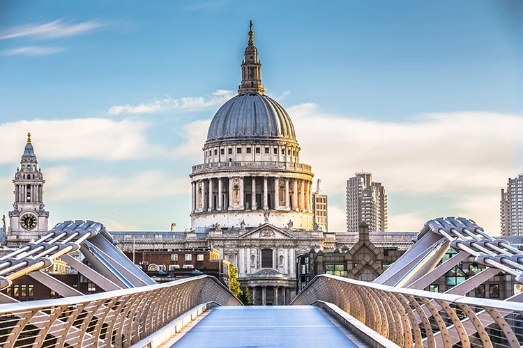

1. Bletchley Park

Bletchley Park is an English country house and estate in Milton Keynes, 50 miles north of London. Originally the eccentric home of the Leon family, as Adolph Hitler’s campaign to invade Europe intensified, Bletchley Park was taken over by the government, who deemed it the perfect place to move the Government Code and Cypher School.Bletchley Park, known by the codename Station X, became the site where the British managed to decipher the machinations of the Enigma, the highly effective code encryption machines used by the Nazis.This team of code-breakers included mathematician Alan Turing, has been estimated to have shortened the war in Europe by more than 2 years, and saved the lives of around 14 million people. Today, visitors can explore the history of Bletchley Park’s role during the war.
2. Hadrian’s Wall

Hadrian’s Wall is a magnificent remnant of Roman Britain and is a UNESCO World Heritage site. Built under the rule of Roman Emperor Hadrian between 122 and 130 AD, it took six legions to complete this once 73 mile wall – 80 miles by Roman measurements. The purpose of Hadrian’s Wall was once thought to have been as a fortification to keep out the Scots, but today historians believe it was a way of monitoring movement between the north and south in an attempt to consolidate the Empire. Despite the significant undertaking in its construction, Hadrian’s successor as Roman head of state, Antoninus Pius, abandoned the wall following the former’s death in 138 A.D. Large sections of Hadrian’s Wall remain intact in northern England and these are surrounded by various Roman monuments, forts and other ruins. There are several ways to visit all of these sections and sites, notably as part of the National Trail, which is a signposted walk, by bus, by bicycle and via tour groups. Hadrian’s Wall was made a World Heritage Site in 1987.
3. Roman Baths - Bath

The world famous Roman Baths complex in Bath, UK, contains an incredible set of thermal spas and an impressive ancient Roman bathing house. First discovered in the 19th century, the Roman Baths are one of the best preserved ancient Roman sites in the UK and continue to be a major tourist attraction. The Romans Baths were initially built as part of the town of Aqua Sulis, founded in 44 AD, and intended as a visiting spot for Romans across the Empire. The baths were a focal point for the town: a place for socialising and spirituality. Today, the Roman Baths offer an incredibly comprehensive insight into the lives of the ancient Romans in the town and around Britain. While the site looks quite small from the outside, a visit can last several hours. Among other sites at the Roman Baths, there is a comprehensive museum dedicated to exploring the lives of the ancient Roman citizens of Bath and an ancient drain used as an overflow system. Around the Great Bath itself, explore the numerous saunas, swimming pools, heated baths and changing facilities at the site.
4. St Paul’s Cathedral

St Paul’s Cathedral, with its vast dome, is an iconic feature of the London skyline and known across the world. It is the city’s central church (a Grade I listed building) and the seat of the Diocese of London. The current building of St Paul’s Cathedral was built between 1675 and 1710, designed in the English Baroque style by Sir Christopher Wren. Its construction was part of a major rebuilding programme in the City after the Great Fire of London. However the site on which it sits has been home to cathedrals since 604 AD. In fact, the St Paul’s Cathedral seen today is the fourth of its kind. St Paul’s fascinating history is inextricably intertwined with that of the nation, with images of the dome surrounded by the smoke and fire of the Blitz being symbolic of Britain’s wartime defiance. It was at St Paul’s Cathedral that the marriage of Prince Charles to Lady Diana Spencer. Many of important events from around the world have been marked at St Paul’s including the end of the First and Second World Wars, the marriage of Prince Charles to Lady Diana Spencer, royal jubilees and birthdays and commemorations of events such Remembrance Day and 11 September 2001. St Paul’s Cathedral is also a famous burial site. Its crypt houses many world famous icons, including Admiral Lord Nelson, the Duke of Wellington and Sir Christopher Wren, whose funerals were hosted at the cathedral. Though not buried at St Paul’s, the state funeral of Sir Winston Churchill was also held here.
5. Stonehenge